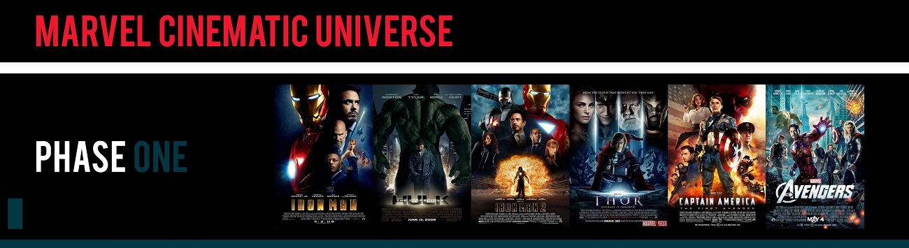

Перша фаза кінематографічного всесвіту Marvel (КВМ) — серія американських фільмів про супергероїв, створених Marvel Studios и заснованих на персонажах Marvel Comics. Всесвіт було створено шляхом з'єднання в загальну сюжетну лінію багатьох фільмів з акторами та персонажами, які перетинаються в різних картинах. У першу фазу увійшло шість фільмів, спродюсованих Кевіном Файгі, які зібрали в прокаті більше $ 3,8 млрд і отримали загальне захоплення критиків і глядачів. Перша фаза разом з Другою і Третьою згодом склали Сагу Нескінченності.
